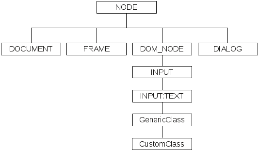

| Version 6.0.3 |
To a certain extent QF-Test exposes the DOM of a web based SUT to 'SUT script'
nodes. This API is not equivalent to working directly at the JavaScript level which can be
done via the methods toJS and evalJS described in this chapter.
With this API is possible to traverse the DOM and retrieve and set attributes of the
respective nodes, but not to manipulate the structure of the DOM. Thus this API is useful
for implementing Name- or FeatureResolvers as described in
section 50.1.
For Swing, FX and SWT QF-Test works with the actual Java GUI classes whereas a pseudo class hierarchy is used for web applications as follows:
|
|  | ||
|
| Figure 50.1: Pseudo class hierarchy for web elements | ||
As shown, "NODE" is at the root of the pseudo class hierarchy. It matches any kind of element in the DOM. Derived from "NODE" are "DOCUMENT", "FRAME", "DOM_NODE" and "DIALOG", the types of nodes implementing the pseudo DOM API explained in section 50.11. "DOM_NODE" is further sub-classed according to the tag name of the node, e.g. "H1", "A" or "INPUT" where some tags have an additional subclass like "INPUT:TEXT".
NoteThe DOM can differ depending on the browser, so you should try not to rely too much on child indexes in your resolvers or scripts in case of cross-browser testing if viable.
QF-Test's DOM API comprises a hierarchy of the following five classes:
Node class
DocumentNode class
FrameNode class
DomNode class
DialogNode class
| Last update: 9/6/2022 Copyright © 1999-2022 Quality First Software GmbH |